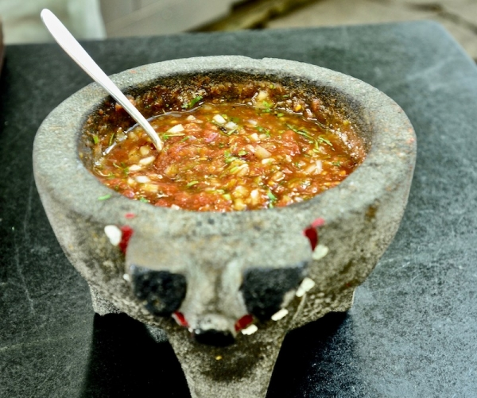

Salsa Molcajete

Ingredients:
- 1 lb Ripe Tomatoes
- Green chiles (2 or to taste)
- 3 cloves Garlic
- 1/2 White Onion
- Salt
- 1/3 cup Cilantro
Steps:
- Roast tomatoes, chiles, garlic, and onion on a pan beneath a hot broiler until charred.
- Blend or crush tomatoes, chile, garlic in a molcajete
- Dice onion and chop cilantro, then mix in
- Transfer to bowl, season with salt, and serve